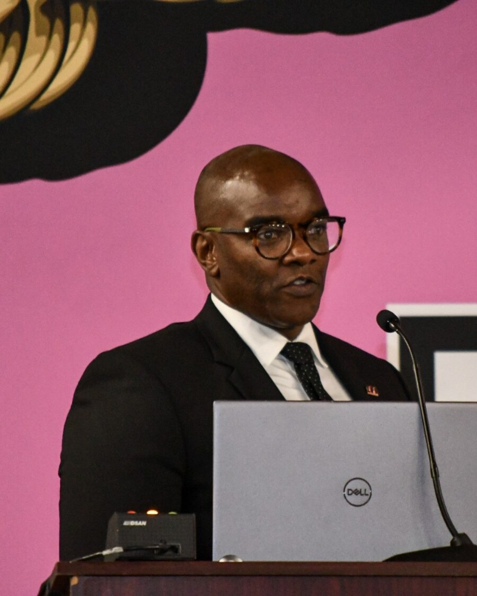
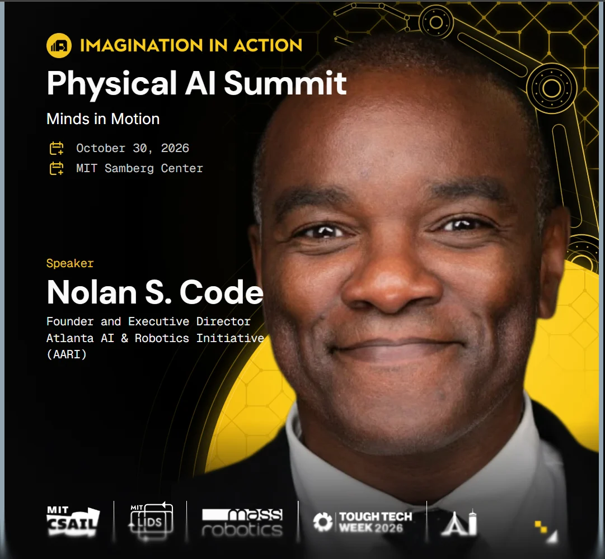

Operators, Not Observers: Who Will Build the Physical AI Economy?
Why the physical AI economy needs more than models, and how communities can build the operators, infrastructure, and ownership required to participate.
Physical AI keynote speaker · Founder, AARI
From robotics and edge AI to data centers, energy, and workforce, Nolan explains what it takes to move intelligence from the cloud into the physical world.
Watch Nolan
See Nolan in conversation with William Hill on RenderATL’s July 8, 2026 livestream.
Speaking sample · Full conversation
Watch on YouTube
Speaking Topics
Why the physical AI economy needs more than models, and how communities can build the operators, infrastructure, and ownership required to participate.
What it takes to move robotics, edge inference, sensors, and autonomous systems from impressive prototypes into the real world.
How robotics, Linux, cloud, GPUs, networking, data centers, edge deployment, and debugging become a practical pathway into the physical AI economy.
Built for technology conferences, business leaders, educators, and workforce audiences. Each talk is tailored to your room. Ask about a hands-on session to accompany the keynote.
On stage

Upcoming · October 30, 2026
Nolan joins Imagination in Action’s Physical AI Summit at MIT’s Samberg Conference Center in Cambridge, Massachusetts.
Official speaker page
TAG //SHIFT: AI · September 18, 2026
State of the Shift: Moving AI from Experimentation to Enterprise Execution. A conversation on business value, production readiness, and workforce development.

RenderATL · August 12, 2026
A keynote on compute, edge infrastructure, and the people who move AI systems into production.
Also on stage: Georgia AI Data Center Leadership Summit, August 13, 2026. Panel: Where Data Center Delivery Is Moving Next.
About Nolan
Nolan S. Code is a physical AI keynote speaker and founder of the Atlanta AI & Robotics Initiative. He connects robotics, edge systems, data centers, and workforce development through practical experience building hands-on training programs.
A former Microsoft AI and cloud specialist, U.S. Army veteran, Morehouse College alumnus, and Georgia Tech MBA, Nolan helps audiences understand the infrastructure and people behind AI deployment.
Book Nolan
Start with a short note or a conversation. We’ll discuss the audience, the right talk, and availability together.
Speaking from $5,000. Final scope and travel are discussed on a call.
Based in Atlanta. Available for in-person and virtual events.
Recording and reuse are discussed at contracting. Technical and travel details follow once we agree on fit.